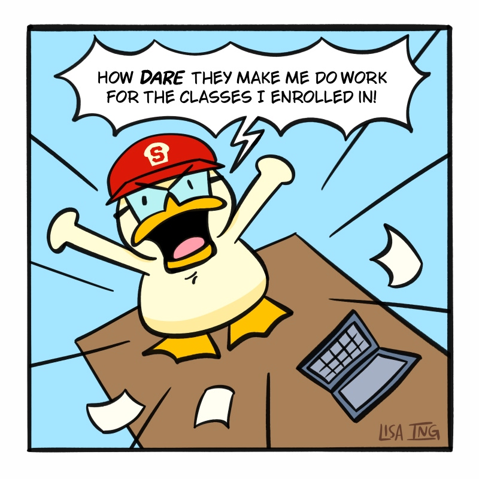
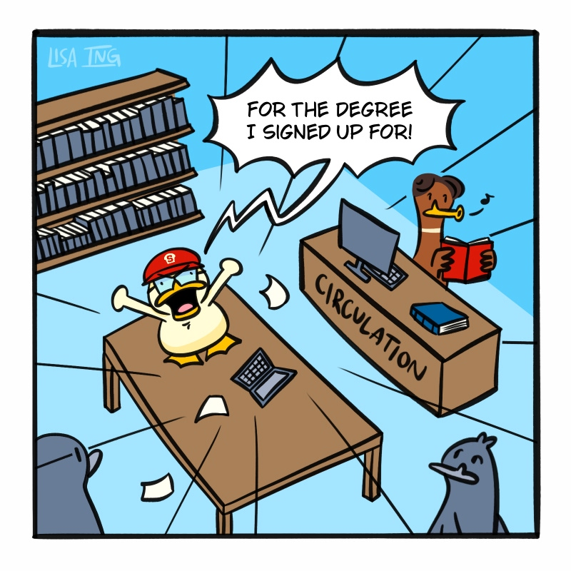

Read from the beginning
Read from the beginning
Welcome to Sourdough University!
Follow Poppy Seed’s weekly adventures as she tackles imposter syndrome, dodges deadlines, and leans on her new friends to survive the chaos of freshman year. A comic series by Lisa Ing.

Poppy’s Origin Story
Poppy is rooted in my experience balancing a sustainable creative practice while witnessing the rapid development of technology as a student at Stanford University. She first appeared in my student spotlight comic in the Stanford Alumni Magazine, “As Duck Would Have It”, loosely following my first two years at Stanford: learning to swim in the college pond, setting my own goal posts, and finding a creative community in the Stanford Storyboard Club. Student Bill carries that spirit into a new form, as a wholesome, comedic slice-of-life four-panel comic, published on Tinyview Comics.


Author’s note
As the first in my family to graduate from college, I came to Stanford carrying a lot. Between post-grad plans, final classes, and soaking up every last moment with friends, Student Bill has been my one constant creative anchor through it all. This comic project has taught me what it means to show up for my art, week after week. I’ve grown in ways I never could have imagined walking onto campus freshman year!